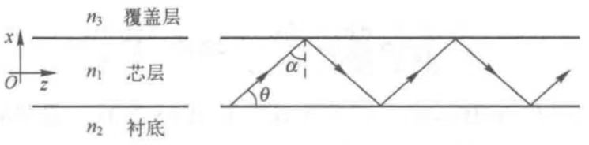
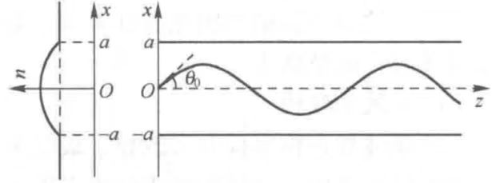

均匀光波导
概述
均匀光波导是正规光波导中最简单的一种.
其折射率分布不仅沿纵向是均匀的，而且沿横截面的分布也是分区域均匀的.
均匀光波导折射率分布的数学描述为：
$$\epsilon(x,y,z) = \epsilon_i,\quad (x,y,z)\in\Omega_i$$
其中\(\Omega_i\)为一个柱状域.
此时有：
$$\nabla\epsilon = 0,\quad (x,y,z)\in\Omega_i$$
平面光波导
应用：平面光波导在激光器中用作谐振腔.
最简单的平面光波导结构：两个无限大平面将光波导空间分为3个部分.

[设]折射率具有对称分布，仅取两个值\(n_1, n_2\)，且\(n_1\gt n_2\)，并可表示为：
$$n(y) = \begin{cases}n_1,\quad |y|\lt a\\n_2, \quad |y|\gt a\end{cases}$$
称\(|y|\lt a\)的部分为芯层，\(|y|\gt a\)的部分为包层.
这种光波导称为阶跃平面光波导.
均匀介质薄膜波导
薄膜波导是最简单的光波导类型，是集成光学的技术基础.

波导光线
对于均匀介质波导，光线在芯层内沿直线传播，经上下界面的反射和这折射形成锯齿形传播路径.
波导中的光线可以分为两种：
束缚光线
满足全反射条件并始终被束缚在芯层内的光线.
折射光线
未满足全反射条件的光线.
这种光线可以穿过界面进入衬底或覆盖层.
波导条件
假定芯层的锯齿形光线沿\(z\)方向传播，但局部光线的指向却有上倾和下倾两种可能，即波矢量\(\boldsymbol{k}\)不是唯一确定的.
\(x\)方向的分量\(\boldsymbol{k}_{1x} = \pm n_1K_0\cos\alpha\)，具有双值不确定性.
传播常数
\(z\)方向分量\(k_{1z} = n_1k_0\sin\alpha\)是确定的，且在光线传播过程中始终保持不变，将其以\(\beta\)表示，称为传播常数.
$$\beta = n_1k_0\sin\alpha = n_1k_0\cos\theta$$
这里指的“两种可能”是指不同时刻有可能向上反射也可能向下反射，不是指同一时刻.
有效折射率\(n_{\text{eff}}\)或\(\bar{\beta}\)
$$n_{\text{eff}} = \bar{\beta} = \beta/k_0 = n\sin\alpha$$
导波条件
由于波导光线必须满足界面全反射条件，即：
$$\sin\alpha\gt n_2/n_1$$
因此\(\beta\)满足：
$$n_2K_0\lt \beta\lt n_1K_0$$
或
$$n_2\lt n_{\text{eff}}\lt n_1$$
[注]波导条件适用于多种类型的波导.
折射率渐变薄膜波导中的光线
一种实用的非均匀介质薄膜波导，其芯层厚度为\(2a\)，芯层折射率沿\(x\)方向渐变，并呈对称分布.

$$n(x) = n(-x)$$
$$n(0) = n_1$$
$$n(\pm a) = n_2$$
函数\(n(x)\)的具体形式有多种选择，它必须是缓变、平滑且对称的.
实际设计的\(n(x)\)的峰值与边值仅差\(1%\)左右，这种函数可用它的泰勒展开式代替而不会降低其精确性.
$$n(x) = n_1[1-\Delta(x/a)^2]$$
- \(\Delta = \frac{n_1^2 - n_2^2}{2n_1^2}\approx \frac{n_1-n_2}{n_1}\approx\frac{n_1-n_2}{n_2}\)：相对折射率差（relative refractive index contrast），是介质波导与光纤中的重要参数.
导波光线
抛物型折射率渐变波导的光线是一组正弦曲线，曲线无需界面反射，而是自行往返，蛇形前进，只要振幅适当，不超出芯区，光线就是导波光线.
这说明，不仅可以利用折射率突变介质构成波导，使光线在界面折返，形成导波光线，也可以利用渐变折射率介质构成传导光线的波导.
传播时延与色散
色散可以归结为以下几类：
材料色散：材料的折射率是波长的非线性函数，从而使光的传播速度随波长而变，由此引起的色散叫做材料色散.
波导色散：同一模式的相位传播常数随波长变化引起的色散.
模式色散：多模光纤中，即使在同一波长下，不同模式或沿不同路径的光线的传播速度也不同，它所引起的色散称为模式色散（或多模色散、多径色散），模式色散取决于多模波导的折射率分布.
偏振色散：单模光纤中实际存在偏振方向相互正交的两个基模，当光纤存在双折射时，这两个模式的传播速度不同，由此引起的色散称为偏振色散，它属于模式色散的范畴，是单模光纤特有的.